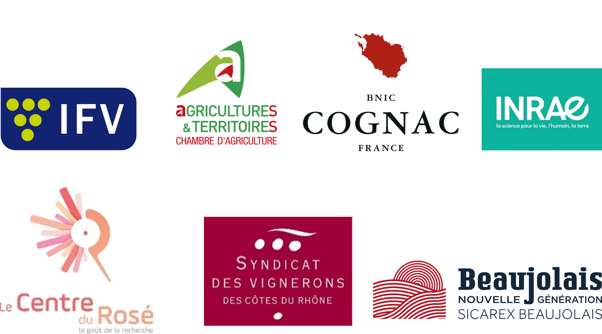
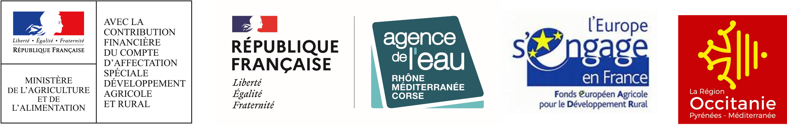

A propos
![]()
Ces pages web sont éditées et gérées par l’Institut Français de la Vigne et du Vin, 2025.
Partenaires techniques

Ressources et financements
Ce site a été cofinancé par l’Agence de l’Eau Rhône Méditerranée Corse et l’Europe via les fonds FEADER dans le cadre du projet CEPOCLIM [2024-2027] Cépages et Porte-greffes adaptés au changement climatiques.
